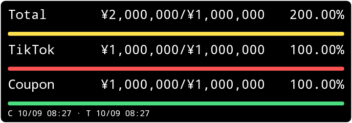

THE FOOL QUEST / ANDROID
収益を、
ホーム画面に。
Total・TikTok・Couponを縦3行で表示。数値の位置をそろえた、コンパクトな専用ウィジェットです。
Android 8.0以上初期サイズ 5 × 2v0.1.0 / code 1約33 KB
APKをダウンロード

Android 35で描画したテスト画像です。数値は表示検証用で、実収益ではありません。
今回の連携範囲
Couponは既存の中央台帳から自動取得します。TikTokと目標は、THE FOOL QUESTから一度連携してください。サイトで値を変更したら再連携が必要です。
インストールして配置
- AndroidでAPKをダウンロードして開きます。必要な場合は、そのブラウザの「不明なアプリのインストール」を許可します。
- 「FOOL QUEST ウィジェット」を開き、「THE FOOL QUESTから連携」を選びます。普段使うサイトと同じブラウザで開き、表示値を確認して「アプリへ連携」を押します。
- アプリ側で値を確認して「受け取る」を押します。背景・文字などを調整し、「設定を保存」を押します。
- 「ホーム画面に追加」を押します。対応していない場合は、ホーム画面を長押しして「ウィジェット」から選びます。
連携画面が開いたら、サイトのTikTok金額・目標との一致を確認してください。未連携の項目は「—」になります。
毎日の操作
| タップ | Coupon更新。3項目の表示を再描画。 |
| 自動更新 | 30分間隔。省電力中は遅れる場合があります。 |
| 長押し | サイズ変更。設定メニューの有無はホームアプリによります。 |
| 表示設定 | 黒／白、色、透過率、文字サイズ、四方向余白、行間、ゲージ。 |
| 通信失敗 | 前回の正常取得値を保持。 |
確認状況
署名APKのビルド、129件の数学・配置検証、7件の読み取り連携テストに合格。Android 35で77件の表示・実API・タップ・サイズ変更検証、通信断3件、再起動2件に合格しました。実端末での配置、長押しメニュー、THE FOOL QUESTのブラウザからの連携は未確認です。
APKの照合情報
SHA-256
4922e2948d343f16550bb73c1c35767b9f9ad7420cb1595ef5e0494d9d54791b
署名証明書 SHA-256
18946d320bb61c58aa627abbf2b53ea521b273b218eaec57f7fbc662f375bdb1